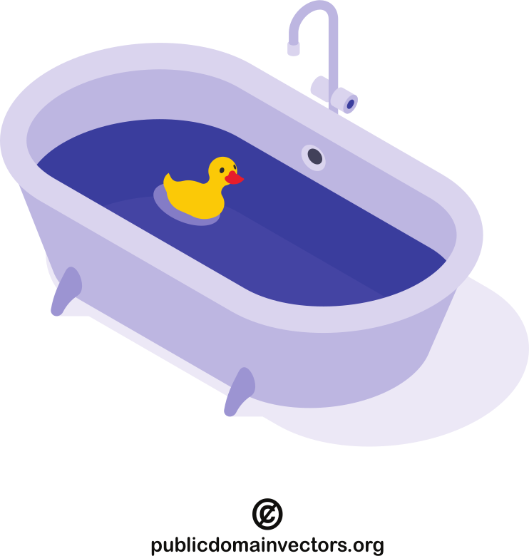

V model (Forsberg & Mooz, 1991)
- each phase has output and a review process
- errors are found at early stage
- decreases the risk of failure
- testing is done in a hierarchical perspective
- review is a testing process usually without executing the code

test pyramid


the turtle and rabbit figures by Delapouite under CC BY 3.0 via game-icons.net
what is a unit test?
- what is a unit?
- smallest testable part of a program
- usually a method
- a unit test is another piece of code, that tests the given unit
def fizzbuzz(i: int) -> str:
"""
>>> fizzbuzz(3)
'Fizz'
>>> fizzbuzz(5)
'Buzz'
>>> fizzbuzz(15)
'FizzBuzz'
>>> fizzbuzz(17)
'17'
"""
result = ""
if i % 15 == 0:
result += "FizzBuzz"
elif i % 3 == 0:
result += "Fizz"
elif i % 5 == 0:
result += "Buzz"
else:
result = str(i)
return result
doctest in Python
what really is a unit?
- defined as a single behaviour exhibited by the system under test
- usually corresponding to a requirement
- it may imply that it is a function or a module / method or a class
- depending on the paradigm
- functions / methods, modules or classes don’t always correspond to units
- “only entry points to externally-visible system behaviours define
units”
- by Kent Beck (Beck, 2002)
source: (Wikipedia contributors, 2024e)
unit vs integration testing
The terms ‘unit test’ and ‘integration test’ have always been rather murky, even by the slippery standards of most software terminology.
– Martin Fowler (Fowler, 2021)
unit test
tests a single behaviour
integration test
test a set of units, working together
in most of my examples a unit will be represented by a method
unit test example
code/fizzbuzz.py
def fizzbuzz(i: int) -> str:
result = ""
if i % 15 == 0:
result += "FizzBuzz"
elif i % 3 == 0:
result += "Fizz"
elif i % 5 == 0:
result += "Buzz"
else:
result = str(i)
return result
code/test_fizzbuzz.py
from fizzbuzz import fizzbuzz
def test_fizzbuzz():
assert fizzbuzz(3) == "Fizz"
assert fizzbuzz(5) == "Buzz"
assert fizzbuzz(10) == "Buzz"
assert fizzbuzz(12) == "Fizz"
assert fizzbuzz(15) == "FizzBuzz"
assert fizzbuzz(17) == "17"
arrange, act, assert pattern
parts of a unit test
arrange
set up the testing environment (e.g., create objects)
act
call the tested unit
assert
compare the result of the ‘act’ step to the expected value
def test_fizzbuzz():
# arrange
test_input = 3
# act
result = fizzbuzz(test_input)
# assert
assert result == "Fizz"
arrange, act, assert(, annihilate) pattern
parts of a unit test
arrange
set up the testing environment
(e.g., create objects)
act
call the tested unit
assert
compare the result of the ‘act’ step to the expected value
annihilate
free resources
automatic in modern languages
how to unit test this funciton?
def query_progress(user_id: int) -> float:
# establish database connection
con = sqlite3.connect("data.db")
# build query
progress_query = f"""
SELECT
lesson / 50.0 AS progress
FROM activity
WHERE
user_id = {user_id} AND
result = 'success'
ORDER BY
lesson DESC
LIMIT 1
;
"""
# execute query
res = con.execute(progress_query)
progress = res.fetchone()[0]
return progress
- short answer: you can’t
- because it is not a unit
- it does 3 things
- single responsibility principle makes unit testing easier
- a ‘stable’ database would be needed for testing
- if the DB content changed, the expected value would become obsolete
separate business logic from persistence
architectural styles provides patterns to separate the business logic from the persistence layer
unit testing usually targets the business logic
which was embedded into the query in the previous example
SELECT
lesson / 50.0 AS progress
FROM activity
WHERE
user_id = 42 AND
result = 'success'
ORDER BY lesson DESC
LIMIT 1;


separated business logic
def query_last_finished_lesson(
user_id: int
) -> float:
# establish database connection
con = sqlite3.connect("data.db")
# build query
query = f"""
SELECT lesson
FROM activity
WHERE
user_id = {user_id} AND
result = 'success'
ORDER BY lesson DESC
LIMIT 1;
"""
# execute query
res = con.execute(query)
return res.fetchone()[0]
def calculate_progress(
finished: int, total: int
) -> float:
return finished / total
def calculate_user_progress(
user_id: int, total: int
) -> float:
f = query_last_finished_lesson(user_id)
return calculate_progress(f, total)
- now, the query is only responsible for getting the last finished
lesson
- the DB connection is still in a bit out of the place, but the testability improved
separated data connection
def query_last_finished_lesson(
con: sqlite3.Connection,
user_id: int
) -> float:
# build query
query = f"""
SELECT lesson
FROM activity
WHERE
user_id = {user_id} AND
result = 'success'
ORDER BY lesson DESC
LIMIT 1;
"""
# execute query
res = con.execute(query)
return res.fetchone()[0]
def establish_database_connection(
path: str = "data.db"
) -> sqlite3.Connection:
return sqlite3.connect(path)
- now, there is a function responsible for the DB connection
- it is easy to use a test database from the test suite and the production database in the production code
- the test DB can store ‘stable’ values
- the expected values in the assert statements are safe
mocking
- the whole unit test suite should be able to run in milliseconds
- to give immediate feedback
- slow elements of the software should be mocked
- e.g., database, network connection
- part of arrange step

test doubles – mock object types
there is no open standard for categories
- dummy
- stub
- spy
- mock
- fake

these are from the book xUnit test patterns: Refactoring test code – by Gerard Meszaros (Meszaros, 2007)
test doubles – test dummy
The simplest, most primitive type of test double. Dummies contain no implementation and are mostly used when required as parameter values, but not otherwise utilized. Nulls can be considered dummies, but real dummies are derivations of interfaces or base classes without any implementation at all.
– Mark Seemann (Seemann, 2007)
require 'sinatra'
get '/user-statistics' do
return {}.to_json
end
test doubles – test stub
provides static input
A step up from dummies, stubs are minimal implementations of interfaces or base classes. Methods returning void will typically contain no implementation at all, while methods returning values will typically return hard-coded values.
– Mark Seemann (Seemann, 2007)
require 'sinatra'
get '/user-statistics' do
data = {}
data['name'] = 'Marvin'
data['id'] = 42
data['registration'] = '2019-10-02'
data['progress'] = 0.84
data['activity'] = [
[2, 0, 2, 3, 5, 3, 2],
[5, 2, 4, 4, 0, 3, 4],
[6, 3, 0, 6, 8, 3, 0],
[9, 7, 4, 7, 0, 9, 9]
]
return data.to_json
end
test doubles – test spy
A test spy is similar to a stub, but besides giving clients an instance on which to invoke members, a spy will also record which members were invoked so that unit tests can verify that members were invoked as expected.
– Mark Seemann (Seemann, 2007)
One form of this might be an email service that records how many messages it was sent.
– Martin Fowler (Fowler, 2006)
or keeping track of the test user (of the learning app) and give back values according to the input parameter
test doubles – test fake
A fake contains more complex implementations, typically handling interactions between different members of the type it’s inheriting. While not a complete production implementation, a fake may resemble a production implementation, albeit with some shortcuts.
– Mark Seemann (Seemann, 2007)
when you add logic for the test double, that might be tested as well
require 'sinatra'
def generate_progress
rand.round(2)
end
def generate_activity_matrix
result = []
(1..4).each do |_w|
daily = []
(1..7).each {|_d| daily.push rand(10)}
result.push daily
end
result
end
get '/user-statistics' do
data = {}
data['name'] = 'Marvin'
data['id'] = 42
data['registration'] = '2019-10-02'
data['progress'] = generate_progress
data['activity'] = generate_activity_matrix
return data.to_json
end
test doubles – test mock
A mock is dynamically created by a mock library (the others are typically produced by a test developer using code). The test developer never sees the actual code implementing the interface or base class, but can configure the mock to provide return values, expect particular members to be invoked, and so on. Depending on its configuration, a mock can behave like a dummy, a stub, or a spy.
– Mark Seemann (Seemann, 2007)
test-driven development (TDD)
- write test before writing the tested code
- without the called unit the test fill fail
- the called function does not exist
- write code, that makes the test pass
- improve the code quality
- e.g., make it clear and clean
- both the test and tested code

red
- test only one thing at a time
- the test should be very simple
- increase the complexity of the test cases continuously
- mock the (external) dependencies
- bit later

green
- use the possible simplest code to pass the test
- it does not matter if the solution is ‘ugly’
- but the test must pass
- as soon as the test passes, this step is done
- and all of the old tests as well
refactor
Refactoring is a disciplined technique for restructuring an existing body of code, altering its internal structure without changing its external behavior.
– Martin Fowler (Fowler, n.d.)
- on code level
- style guide, best practices, idiomatic code
- on architecture level
- design patterns like SOLID, DRY, etc.
- part of day-to-day programming
- ‘campground rule’: leave the code better than you found it

test-driven development – fizzbuzz example
fizzbuzz.py
def fizzbuzz():
pass
def fizzbuzz(i):
pass
def fizzbuzz(i):
return "Fizz"
def fizzbuzz(i):
return "Fizz"
def fizzbuzz(i):
if i % 3 == 0:
return "Fizz"
elif i % 5 == 0:
return "Buzz"
def fizzbuzz(i):
if i % 3 == 0:
return "Fizz"
elif i % 5 == 0:
return "Buzz"
def fizzbuzz(i):
if i % 15 == 0:
return "FizzBuzz"
elif i % 3 == 0:
return "Fizz"
elif i % 5 == 0:
return "Buzz"
def fizzbuzz(i):
if i % 15 == 0:
return "FizzBuzz"
elif i % 3 == 0:
return "Fizz"
elif i % 5 == 0:
return "Buzz"
def fizzbuzz(i):
if i % 15 == 0:
return "FizzBuzz"
elif i % 3 == 0:
return "Fizz"
elif i % 5 == 0:
return "Buzz"
else:
return str(i)
test_fizzbuzz.py
from fizzbuzz import *
def test_fizzbuzz():
assert fizzbuzz(3) == "Fizz"
from fizzbuzz import *
def test_fizzbuzz():
assert fizzbuzz(3) == "Fizz"
assert fizzbuzz(5) == "Buzz"
from fizzbuzz import *
def test_fizzbuzz():
assert fizzbuzz(3) == "Fizz"
assert fizzbuzz(5) == "Buzz"
from fizzbuzz import *
def test_fizzbuzz():
assert fizzbuzz(3) == "Fizz"
assert fizzbuzz(5) == "Buzz"
assert fizzbuzz(15) == "FizzBuzz"
from fizzbuzz import *
def test_fizzbuzz():
assert fizzbuzz(3) == "Fizz"
assert fizzbuzz(5) == "Buzz"
assert fizzbuzz(15) == "FizzBuzz"
from fizzbuzz import *
def test_fizzbuzz():
assert fizzbuzz(3) == "Fizz"
assert fizzbuzz(5) == "Buzz"
assert fizzbuzz(15) == "FizzBuzz"
assert fizzbuzz(17) == "17"
from fizzbuzz import *
def test_fizzbuzz():
assert fizzbuzz(3) == "Fizz"
assert fizzbuzz(5) == "Buzz"
assert fizzbuzz(15) == "FizzBuzz"
assert fizzbuzz(17) == "17"
NameError: name ‘fizzbuzz’ is not defined
TypeError: fizzbuzz() takes 0 positional arguments but 1 was given
AssertionError: assert None == ‘Fizz’
passed
AssertionError: assert ‘Fizz’ == ‘Buzz’ (5)
passed
AssertionError: assert ‘Fizz’ == ‘FizzBuzz’ (15)
passed
AssertionError: assert None == ‘17’ (17)
passed
there is not much to improve on the code,
except that according to the PEP8 Python style guide the ‘star import’
is not allowed; it should be import fizzbuzz
As the tests get more specific, the code gets more generic.
– Robert C. Martin, The Cycles of TDD (Martin, 2014)

transformation priority premise
- ({} -> nil) from no code at all to code that employs nil
- (nil -> constant)
- (constant -> constant+) a simple constant to a more complex constant
- (constant -> scalar) replacing a constant with a variable or an argument
- (statement -> statements) adding more unconditional statements
- (unconditional -> if) splitting the execution path
- (scalar -> array)
- (array -> container)
- (statement -> tail-recursion)
- (if -> while)
- (expression -> function) replacing an expression with a function or algorithm
- (variable -> assignment) replacing the value of a variable
source: Robert C. Martin, The Transformation Priority Premise (Martin, 2013)
coding kata
kata (型)
set sequence of positions and movements in martial arts
- code/coding kata is a (relatively) simple programming task, that is
meant to practised over and over again (in TDD)
- in different languages, different praradigms, different coding styles
- some coding kata
- codewars.com, codekata.com, etc.
too strict TDD
- TDD requires adding one test (case) at a time and then make the code pass
- this is often unrealistic
- e.g., on existing codebase, in research
- strict TDD is good for learning, practising
- coding kata
- but tests are still important!
- what I to do is to turn experiments into tests
experiment-driven testing
task: get day from a date string like
Nov 08, 13:11
- do experiment
>>> "Nov 08, 13:11"[3:5]
' 0'
>>> "Nov 08, 13:11"[4:6]
'08'
- put it to a function
def extract_day(s: str) -> int:
return int(s[4:6])
- add test based on the experiment
def test_extract_day():
actual = extract_day("Nov 08, 13:11")
expected = 8
assert actual == expected
behaviour-driven development (BDD)
- BDD is an extension of TDD
- using BDD can help you to turn an idea for a requirement into implemented, tested, production-ready code
- BDD starts from a user story and focuses on adding the acceptance
criteria
- which can be turned into unit tests
Title (one line describing the story)
Narrative:
As a [role]
I want [feature]
So that [benefit]
Acceptance Criteria: (presented as Scenarios)
Scenario 1: Title
Given [context]
And [some more context]...
When [event]
Then [outcome]
And [another outcome]...
Scenario 2: ...
taken from (Terhorst-North, 2007) by Daniel Terhorst-North | CC-BY 4.0
- the strict TDD does not allow more than one new test at a time
acceptance criteria
- describes how a system should behave under certain circumstances
- may originate from domain experts
- the ‘rules’ are written in natural language, but in a structured form
- easy to discuss with non-developers
- based on the acceptance criteria multiple tests can be written
Title (one line describing the story)
Narrative:
As a [role]
I want [feature]
So that [benefit]
Acceptance Criteria: (presented as Scenarios)
Scenario 1: Title
Given [context]
And [some more context]...
When [event]
Then [outcome]
And [another outcome]...
Scenario 2: ...
taken from (Terhorst-North, 2007) by Daniel Terhorst-North | CC-BY 4.0
acceptance test-driven development
- extends TDD and BDD
- instead of a unit, ATDD focuses on the acceptance criteria of the whole system
- advocates writing acceptance tests before developers begin coding
test format like BDD, example from (Wikipedia contributors, 2022):
Given Book that has not been checked out
And User who is registered on the system
When User checks out a book
Then Book is marked as checked out
readme driven development
beautifully crafted library with no documentation is damn near worthless […]
So how do we solve this problem? Write your Readme first.
– by Tom Preston-Werner (Preston-Werner, 2010)
readme ~ user manual, but brief, concise
- before you write any code or tests or behaviors or stories or anything
- document how a user would use the software
- you’ll know what you need to implement
- a lot simpler to have a discussion based on something written down
source: Readme Driven Development – by Tom Preston-Werner (Preston-Werner, 2010)
test coverage
- the percentage of the code lines ‘protected’ or covered by tests
code/fizzbuzz.py
def fizzbuzz(i: int) -> str:
result = ""
if i % 15 == 0:
result += "FizzBuzz"
elif i % 3 == 0:
result += "Fizz"
elif i % 5 == 0:
result += "Buzz"
else:
result = str(i)
return result
def fizzbuzz(i: int) -> str:
result = ""
if i % 15 == 0:
result += "FizzBuzz"
elif i % 3 == 0:
result += "Fizz"
elif i % 5 == 0:
result += "Buzz"
else:
result = str(i)
return result
def fizzbuzz(i: int) -> str:
result = ""
if i % 15 == 0:
result += "FizzBuzz"
elif i % 3 == 0:
result += "Fizz"
elif i % 5 == 0:
result += "Buzz"
else:
result = str(i)
return result
code/test_fizzbuzz.py
from fizzbuzz import fizzbuzz
def test_fizzbuzz():
assert fizzbuzz(15) == "FizzBuzz"
assert fizzbuzz(3) == "Fizz"
from fizzbuzz import fizzbuzz
def test_fizzbuzz():
assert fizzbuzz(15) == "FizzBuzz"
assert fizzbuzz(3) == "Fizz"
assert fizzbuzz(5) == "Buzz"
from fizzbuzz import fizzbuzz
def test_fizzbuzz():
assert fizzbuzz(15) == "FizzBuzz"
assert fizzbuzz(3) == "Fizz"
assert fizzbuzz(5) == "Buzz"
assert fizzbuzz(17) == "17"
test coverage: 70%
test coverage: 90%
test coverage: 100%
four control flow branch, all of them needs to be tested
how to measure code quality?
it is hard to objectively measure the quality of code
- number of source lines of code (SLOC)
- style guide compliance – is the code clean?
- Halstead metrics
- cyclomatic complexity – is the code simple?
- maintainability index
- test coverage – is the code tested?

when unit tests are not more than a measure
- zombie scrum: doing something without heart, without its essence
- if you write unit tests just to increase the test coverage they
loose its function
- and collect badges:


- and collect badges:

what to test?
def calculate_progress(
finished: int,
total: int,
as_percentage: bool,
) -> float:
progress = finished / total
if as_percentage:
return progress * 100
else:
return progress
from progress import calculate_progress
def test_progress():
total = 50
for i in range(total + 1):
expected = i / total
actual = calculate_progress(i, total, False)
assert actual == expected
def test_progress_percentage():
total = 50
for i in range(total + 1):
expected = i / total * 100
actual = calculate_progress(i, total, True)
assert actual == expected

test coverage: 100%, achievement obtained, but this is completely stupid
test the edge cases!
def calculate_progress(
finished: int,
total: int,
as_percentage: bool,
) -> float:
progress = finished / total
if as_percentage:
return progress * 100
else:
return progress
this function need some value checking
what does this function do?
-
divides the number of finished lessons by the total number of lessons
-
returns progress in the closed interval of [0, 1] or [0, 100]
edge cases
-
total is 0
-
total is less than 0
-
finished is less than 0
-
finished is greater than total
test coverage only measures that every control flow branch is tested
the point of testing is testing for the edge cases
how to find edge cases
- interval boundaries
- requirements
- defining of done
- acceptance criteria of BDD-style scenarios
- extended user user stories
Story: Account Holder withdraws cash
As an Account Holder
I want to withdraw cash from an ATM
So that I can get money when the bank is closed
story example taken from What’s in a Story? (Terhorst-North, 2007) by Daniel Terhorst-North | CC-BY 4.0
an acceptance criterion:
Scenario 1: Account has sufficient funds
Given the account balance is $100
And the card is valid
And the machine contains enough money
When the Account Holder requests $20
Then the ATM should dispense $20
And the account balance should be $80
And the card should be returned
a test function:
def test_withdraw():
account = Account(balance=100)
withdraw_money(account, 20)
assert account.balance == 80
account = Account(balance=10)
withdraw_money(account, 20)
assert account.balance == 10
legacy code
- old, inherited code
- difficult-to-change code that we don’t understand
- rotten
- degraded, deteriorated, or lost its use or performance over time (Wikipedia contributors, 2024b)
- spaghetti code
- “has a complex and tangled control structure, resulting in a program flow that is like a bowl of spaghetti, twisted and tangled” (Horstmann, 2007) via (Wikipedia contributors, 2024c)
technical debt
implied cost of future reworking because a solution prioritized short-term solution over long-term design (Beal, 2011) (Wikipedia contributors, 2024d)
some reasons:
-
ignoring style guides, coding standards
-
lack of test suite
-
tight coupling
-
temporary quick fixes
-
lack of documentation
-
laziness
what is legacy code?
Code without tests is bad code. It doesn’t matter how well written it is; it doesn’t matter how pretty or object-oriented or well-encapsulated it is. With tests, we can change the behavior of our code quickly and verifiably. Without them, we really don’t know if our code is getting better or worse.
– Michael Feathers, Working Effectively with Legacy Code: Preface (Feathers, 2004)
- there is a change request, which results on code change
- the test suite is like a safety net that can prevent that a code change breaks an existing function


the legacy code dilemma
When we change code, we should have tests in place. To put tests in place, we often have to change code.
– Michael Feathers, Working Effectively with Legacy Code (Feathers, 2004)
(Part I / Chapter 2)
the legacy code change algorithm
- identify change points
- find test points
- break dependencies
- write tests
- make changes and refactor
when?
-
not for the sake of refactoring
-
along with other changes
-
leave the code cleaner than you found it
how?
-
in small, safe steps
-
understand the code you change
-
use your IDE
-
sensing, separation, mocking
source: Working Effectively with Legacy Code by Michael Feathers (Feathers, 2004)
sensing
We break dependencies to sense when we can’t access values our code computes.
– Michael Feathers, Working Effectively with Legacy Code (Feathers, 2004)
e.g., misspelled function name


separation
We break dependencies to separate when we can’t even get a piece of code into a test harness to run.
– Michael Feathers, Working Effectively with Legacy Code (Feathers, 2004)
seams
A seam is a place where you can alter behavior in your program without editing in that place.
– Michael Feathers, Working Effectively with Legacy Code: Part I / chp. 4 (Feathers, 2004)
A seam is a place in the code that you can insert a modification in behavior. […] One way to take advantage of a seam is to insert some sort of fake.
– tallseth via Stackoverflow | CC BY-SA 3.0
- using inheritance
- subclass can do the same as parent class
- but can be extended with sensing code
- preprocessing seam
- link seam
- using build script, e.g., “same” class in different directory

changing the software
| add feature | fix a bug | refactor | optimize | |
|---|---|---|---|---|
| structure | changes | changes | changes | |
| new funcionality | changes | |||
| functionality | changes | |||
| resource usage | changes |
Michael Feathers, Working Effectively with Legacy Code: part 1 pp 6 (Feathers, 2004)
testing approaches
black box

- examining / testing the functionality without knowing the inner structure
- works at all levels: unit, integration, system, acceptance
- also for debugging a legacy code
white box

- testing the internal structure as opposed to its functionality
- often associated to unit testing, but also works on higher levels (i.e., integration, system)
smoke testing
- preliminary testing
- smoke tests are a subset of test cases that cover the most important functionality of a component or system
- set of tests run on each new build to verify that it is testable before sent to the test team
source: Smoke testing (software), Wikipedia (Wikipedia contributors, 2024a)

“The phrase smoke test comes from electronic hardware testing. You plug in a new board and turn on the power. If you see smoke coming from the board, turn off the power. You don’t have to do any more testing. (Bach et al., 2002)”
rubber duck debugging
- a method of debugging code by articulating a problem in natural language
- originates from a story in the book The Pragmatic Programmer (Hunt & Thomas, 2019)
- in which a programmer explains the code, line by line, to a rubber duck
- rationale: teaching / explaining something can provide a deeper understanding
- also for reviewing

references
Bach, J., Pettichord, B., & Kaner, C. (2002). Lessons learned in software testing: A context-driven approach. John Wiley & Sons.
Beal, V. (2011). Technical debt. https://www.techopedia.com/definition/27913/technical-debt .
Beck, K. (2002). Test driven development: By example. Addison-Wesley Professional.
Feathers, M. (2004). Working effectively with legacy code. Prentice Hall Professional.
Forsberg, K., & Mooz, H. (1991). The relationship of system engineering to the project cycle. Center for Systems Management, 5333.
Fowler, M. (n.d.). Refactoring. https://refactoring.com/ .
Fowler, M. (2006). Test double. https://martinfowler.com/bliki/TestDouble.html .
Fowler, M. (2021). On the diverse and fantastical shapes of testing. https://martinfowler.com/articles/2021-test-shapes.html .
Horstmann, C. S. (2007). Java concepts for AP computer science. John Wiley & Sons, Inc.
Hunt, A., & Thomas, D. (2019). The pragmatic programmer: From journeyman to master (2nd ed.). Addison Wesley.
Martin, R. C. (2013). The transformation priority premise. https://blog.cleancoder.com/uncle-bob/2013/05/27/TheTransformationPriorityPremise.html .
Martin, R. C. (2014). The cycles of TDD. http://blog.cleancoder.com/uncle-bob/2014/12/17/TheCyclesOfTDD.html .
Meszaros, G. (2007). xUnit test patterns: Refactoring test code. Pearson Education.
Preston-Werner, T. (2010). Readme driven development. https://tom.preston-werner.com/2010/08/23/readme-driven-development.html .
Seemann, M. (2007). Unit testing: Exploring the continuum of test doubles. https://learn.microsoft.com/en-us/archive/msdn-magazine/2007/september/unit-testing-exploring-the-continuum-of-test-doubles .
Terhorst-North, D. (2007). What’s in a story? https://dannorth.net/whats-in-a-story .
Wikipedia contributors. (2022). Acceptance test-driven development — Wikipedia, the free encyclopedia. https://en.wikipedia.org/w/index.php?title=Acceptance_test-driven_development&oldid=1091258091.
Wikipedia contributors. (2024a). Smoke testing (software) — Wikipedia, the free encyclopedia. https://en.wikipedia.org/w/index.php?title=Smoke_testing_(software)&oldid=1251780629.
Wikipedia contributors. (2024b). Software rot — Wikipedia, the free encyclopedia. https://en.wikipedia.org/w/index.php?title=Software_rot&oldid=1236668404 .
Wikipedia contributors. (2024c). Spaghetti code — Wikipedia, the free encyclopedia. https://en.wikipedia.org/w/index.php?title=Spaghetti_code&oldid=1245199146.
Wikipedia contributors. (2024d). Technical debt — Wikipedia, the free encyclopedia. https://en.wikipedia.org/w/index.php?title=Technical_debt&oldid=1253473056.
Wikipedia contributors. (2024e). Unit testing — Wikipedia, the free encyclopedia. https://en.wikipedia.org/w/index.php?title=Unit_testing&oldid=1249792515.